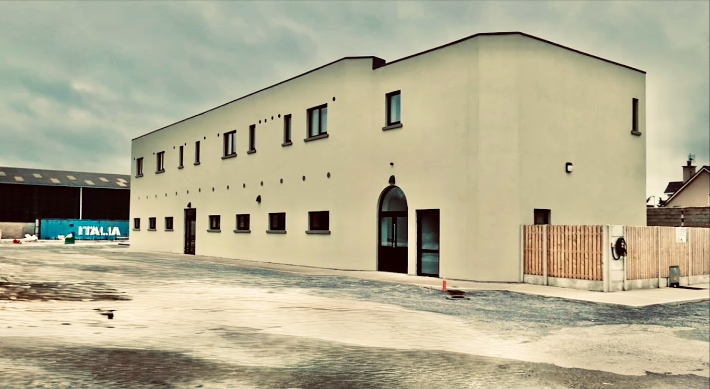

Prayers began at Kerry General Hospital (UHK)
Kerry Islamic Cultural Centre
· Est. 2001
About Us
To cater for the religious, cultural and social needs of Muslims in the county of Kerry.
1988
Community roots in Kerry
2001
Registered charity
140+
Madrasah students
CHY 14981
Charity number

اَلسَّلَامُ عَلَيْكُمْ وَرَحْمَةُ ٱللَّٰهِ وَبَرَكَاتُهُ
Who We Are
A Muslim community organisation serving Co. Kerry with worship, education, and support for families in Tralee and beyond.

Vision
Our aim is to provide for the religious, cultural and social needs of Muslims in Kerry, alongside our neighbours in Tralee and beyond.
Mission
We promote the teachings of Islam, encourage praying together, and support the spiritual and social well-being of our members so they may contribute to society at large.
Our Story
A journey of faith, patience, and community in Tralee

Kerry Islamic Cultural Centre, Tralee
Alhamdulillah, with immense gratitude to Allah (سبحانہ وتعالی), the journey of our beloved Muslim community in Tralee is a powerful story of steadfast faith, patience, and unwavering reliance on the Most Merciful. In the late 1980s and 1990s, when our community was just beginning, we found a blessed refuge to perform our prayers within the walls of Kerry General Hospital—made possible by caring Muslim doctors and the kindness of the hospital administration, a true mercy from Allah.
From hospital prayer rooms to a purpose-built masjid—every step was taken with tawakkul, brotherhood, and respect for the laws of this land.
As Allah’s blessings multiplied and our community grew with brothers and sisters from many walks of life, the deep yearning for a sacred, dedicated space—to worship, to unite, and to nurture our faith—became undeniable. With hearts full of tawakkul (trust in Allah) and the spirit of brotherhood, we joined hands, especially those in the medical profession, to embark on the blessed mission of establishing the Kerry Islamic Cultural Centre (KICC).
Today, by Allah’s boundless mercy, our Masjid stands as a radiant beacon of spiritual light—a vibrant centre filled with the remembrance of Allah, knowledge, and community warmth—welcoming all who seek to grow closer to their Creator and to one another.
فَبِأَىِّ ءَالَآءِ رَبِّكُمَا تُكَذِّبَانِ
Then which of the favours of your Lord will you deny?
How We Evolved
By the grace, guidance, and infinite mercy of Allah (سبحانہ وتعالی), the Kerry Islamic Cultural Centre was formally established as a charity in 2001. With sincere hearts and steadfast resolve, we crafted a constitution rooted in faith and responsibility. By 2003, we were blessed to secure our own space for daily prayers and the blessed Friday congregations. Recognising the sacred trust of preserving the Islamic identity of our youth, we began offering Qur’an and Islamic studies classes, nurturing the next generation to hold firm to the deen.
Alhamdulillah, through the generosity and dua of our community, and with the blessings of the County Authorities, 2007 saw us purchase and transform our first dedicated masjid—a sanctuary of prayer, unity, and spiritual growth. Yet as our community flourished, so did the numbers gathering for Jumu’ah and Eid, bursting the walls and reminding us of the growing ummah’s vibrant life and yearning for closeness to Allah.
Our journey is marked by profound milestones: humble beginnings at UHK in 1988, rented premises in 2000 to serve as our foundation, the purchase of our first dedicated masjid in 2007, the acquisition of land in 2016 to build a purpose-built masjid and madrasah, culminating in the blessed move to our new home in 2025. This path reflects the barakah of sincere intention, tireless community effort, and unshakeable faith in Allah’s plan.
Inside our masjid

Our new masjid home, 2025
Community Involvement
Built by the community, for the community
Allah (سبحانہ وتعالی) has blessed us abundantly through your generous donations, sincere du’as, and tireless voluntary efforts. Our new masjid and madrasah now stand as a sanctuary for the soul—a place where daily prayers, Taraweeh, weekly Tafseer, madrasah education for 140+ children, Hifz classes, youth activities, women’s learning circles, and outreach programmes thrive.
Now, as we embark on this blessed new chapter, we humbly ask for your continued support. Help us complete the final stage of this noble project and build a legacy of iman, love, and unity in Tralee, inshaAllah.
Our Journey at a Glance
Rented premises for prayer and outreach
First dedicated masjid purchased
Land acquired for purpose-built masjid
Moved into our new masjid, Alhamdulillah
Community Life Today
Programmes and services at the heart of our masjid
Our Team
“Faithful believers are to each other as the bricks of a wall, supporting and reinforcing each other.” — Al-Bukhari
Imams
Mustafa Patel
ImamMoulana Salman
ImamLeadership
Apa
ScholarDr Altaf Memon
TrusteeCommittee & Volunteers
Mohsin Rana
TreasurerRana Mahbub
MemberShahid Jamil
MemberAbid Ghane
Member
Technical & Website
Nazmul Alam
Maintaining our website, digital tools, and community communications.
Visit & Connect
We welcome visitors, enquiries, and new families in Kerry
Support Our Masjid
Help us complete the final stage of this noble project and build a legacy of iman, love, and unity in Tralee.
Loading appeal…
—
raised of
— goal
جَزَاكَ اللَّهُ خَيْرًا
JazakAllahu Khayran